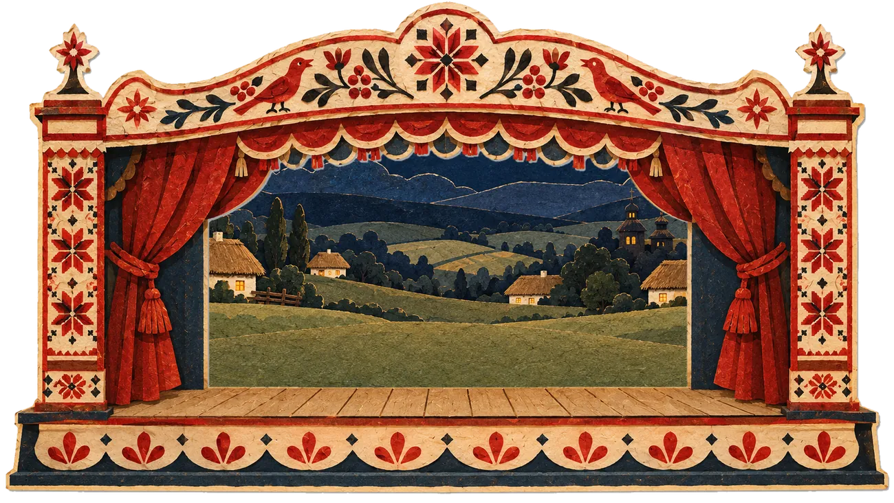

Нове
НовеБезкоштовноБезкоштовна п’ятниця #1
Склад числа. Числові будиночки
Діти «заселяють» будиночки: дописують пари чисел, які разом дають число на даху.


Готові уроки-свята для дошки: квест для всього класу, мультфільми з паперовими героями українського вертепу, роздатка і сценарій на 45 хвилин. А щоп’ятниці — новий безкоштовний матеріал для друку.

Натисніть на героя — він заговорить
Робочі аркуші, плакати й вирізалки в паперовому стилі Дивоуроку. Без реєстрації: відкрили, надрукували, провели.
НовеДіти «заселяють» будиночки: дописують пари чисел, які разом дають число на даху.

Інтерактивне заняття до Дня хліба: клас разом сіє, жне, меле й пече хліб. Мультфільми, роздатка, презентація.

Чому День писемності тепер 27 жовтня, де слухати Радіодиктант і що зробити з класом без підготовки.
Кожен набір — це цілий захід: квест для всього класу, мультфільми з героями паперового вертепу, роздатка й сценарій. Окремі версії для 1–4, 5–7 і 8–11 класу.

Клас разом сіє, жне, молотить, меле й пече хліб у печі, а кіт Воркіт і сорока Вістка перевіряють «новини» про хліб.

Подорож через 5 епох — від глаголиці до Франка. Класики самі розповідають дітям свою історію, а клас збирає слово-скарб.
Наступний набір уже в роботі — у тому ж стилі, з героями вертепу. Підпишіться, щоб дізнатися першими.

Нічого не треба шукати, друкувати навмання чи складати самотужки. Кожен набір — це готовий захід від першої хвилини до останньої.

Великі кнопки, звуки, конфеті — діти виходять до дошки й виконують завдання всім класом.

Герої оживають у стилі паперового вертепу й самі розповідають дітям свою історію.

Робочі аркуші, плакати для класу, грамоти й закладки — друкуються і в кольорі, і чорно-білими.

Хвилина за хвилиною: що сказати, що показати, скільки часу на кожну частину.
Спершу можна безкоштовно пройти демо-зупинку й переконатися, що дітям сподобається.
Один код працює на 3 пристроях: дошка, ноутбук і телефон.
На будь-якій дошці чи проєкторі, у браузері. За потреби один раз зберігаєте набір на пристрої — і він працює без інтернету.
Не треба збирати урок по шматочках з десяти сайтів. Відкрили — і все готово.

Виходять до дошки, працюють разом, радіють кожній букві. Урок, який запам'ятовується.

Вертеп, вишивка, класики, народні прислів'я. Тексти творів — лише з вільних джерел.

Без реклами й сторонніх трекерів. Не потрібні акаунти учнів — ми не збираємо жодних даних дітей.
До кожного заняття — сторінка джерел і фактчек: укази, авторські тексти, музейні колекції, академічні енциклопедії. Понад 30 джерел, і біля кожного написано, що саме воно підтверджує. Ніяких вигаданих «цитат» класиків.
Залиште заявку — напишемо вам реквізити для оплати, а після оплати надішлемо код доступу.
Протягом дня напишемо вам реквізити для оплати. А поки можна пройти безкоштовну зупинку з Тарасом Шевченком разом із класом.
Пройти демо-зупинкуКожен новий набір — у тому ж стилі й з тими ж героями вертепу.
Щоп’ятниці ми викладаємо в каталог новий безкоштовний матеріал для друку: робочі аркуші, плакати, вирізалки. Завантажити можна без реєстрації, друкувати — для свого класу й ділитися з колегами.
Для першого входу й збереження набору потрібен інтернет. Потім натисніть «Увесь набір без інтернету → Зберегти весь набір» — і квест, мультфільми, поради, відповіді та роздатка працюватимуть без мережі на цьому пристрої. Окремі відео, PDF і сценарій також можна завантажити файлами.
У будь-якому сучасному браузері: інтерактивна дошка чи панель (Windows або Android), ноутбук із проєктором, планшет, телефон. Нічого встановлювати не обов'язково — але можна натиснути «Встановити», і з'явиться окрема програма.
Залиште заявку або напишіть нам у Messenger на сторінку «Дивоурок» — надішлемо реквізити для оплати. Після оплати код приходить у повідомленні та на пошту — вводите його один раз на кожному пристрої, і матеріали набору відкриваються.
До трьох: наприклад, дошка в класі, домашній ноутбук і телефон. Щоб перенести доступ на новий пристрій, просто вийдіть на старому.
Ні. Код залишається вашим назавжди. Якщо браузер згодом попросить увійти повторно, просто введіть той самий код.
Так. Покажіть екран у Meet чи Zoom — діти відповідають голосом, а ви натискаєте відповіді на своєму комп'ютері.
Так. Учням не потрібні акаунти, ми не збираємо їхніх даних, на сайті немає реклами і сторонніх трекерів. Усі тексти й факти перевіряємо перед публікацією.
Напишіть на info@dyvourok.com.ua — відповімо й допоможемо.
Демо-зупинка з Тарасом Шевченком — безкоштовно й без реєстрації.